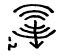
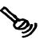
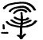
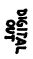
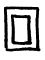
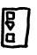
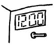
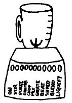
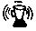

Design Issues in this Narcoleptic World
Yesterday I was canceling my America OnLine account, which will be of merely tangential relevance to this article. I was expecting to be given another free month. But the friendly customer service representative took an unexpected turn from our usual monthly dialogue and began to quote prices, expecting me to now pay for the internet. I attempted to explain that I would not pay anything for this service, viewing it, like FOX or the Metro, as by nature free. I suppose that these operators are truly actresses and that the indignation and hurt feelings she displayed should be of no concern. When she asked me what was wrong with AOL, I had to laugh. Everything. Everything is wrong with it. Like nuclear weapons, like kiddy porn or the war on drugs, it’s plain to see that everything, everything is wrong with it.
For example: AOL’s Instant Messenger. I wish I could cancel my service through this medium, so that I could add all those little faces. Are there emoticons for annoyance or impatience? I’m proud to say I don’t know because I’ve never IMed. I remember when people used to make those faces with their colons and parentheses and I would have to twist my head around to get that human contact. But now that the faces are the right way and yellow, I still have the same problem trying to figure out the degrees of sarcasm implied by these icons.
loser@aol.com: IM sux
me@sarcasmisdead.net: know what u mean!
loser@aol.com: let’s start Atkins
me@sarcasmisdead.net: word
I can’t understand even non-humanoid computer icons. I’m not really fluent in this new hieroglyphics. Recently I dressed in my spelunking gear to explore among the dust bunnies under my desk. Wedging my head in behind my CPU and then twisting my neck upright while shining my torch, I was able to make out the row of tiny icons printed colorlessly with raised metal. I was able to jot them down with a pen, so that I could come back to my seat to begin the work of deciphering them into English, the non-pictorial language which I understand. Just in case you ever want to hook your 4-track to your computer, I’ll share with you the findings of my archaeological mission:

The fifth symbol was the Rosetta stone of the finding, as it was recognized as the old Latin lettering system. Its use of the term ‘digital’ implied the hieroglyphics referred to something else: analog. The second symbol reminded me of a microphone, a mono device. The ‘sound waves’ appearing to emanate from it confused me, but I felt sure this was an input jack. In the language of the fifth symbol, this symbol means ‘ANALOG MONO IN.’ The first and third symbol differ only by what I reasoned were turned arabic numbers preceded by hyphens. Using the previous logic, these symbols are translated as ‘ANALOG STEREO OUT,’ typically symbolized as headphones. Therefore the fourth symbol is ‘ANALOG STEREO IN,’ the very hole I was seeking! The sixth symbol, I learned by tracing the wire leading from it, is meant to represent my computer monitor. The last symbol remains a mystery to this researcher.
I guess while I was down there journeying through the web of wires I must have bumped the powerstrip out of its outlet. As a result I had to reset the time on my answering machine, stereo, and VCR. Luckily I keep a file in my cabinet which alphabetically stores instructions for all my electronics. The answering machine clock is relatively easy to set because the electronic woman gives verbal feedback. (My big gripe with this lady, however, is the speed that she talks. “You.... have... one.... new.... message............ Message..... one...... Seven...... oh...... eight........... p.m............ friday.” I would think that electronics would be capable of speaking at a reasonable rate, not laboring over their every choice of wording.) Setting the clock on my stereo, however, is a very challenging mission. You must first turn it off and then hold down a small button saying PRG/SET for five seconds. Then the clock will begin to blink and if you use some magic combination of the EQ controls and the mode buttons without ever trying to increase the time with the volume or track controls, you will succeed, but only if you remember to hit PRG/SET when you are finished and you never pause (such as you would if you were following the instructions) for more than three seconds. You might also get tangled up in 24 hour time.
Here is an alternative way to set a clock, just a little suggestion for the engineers at Toshiba:
 To set clock: turn knob.
Meanwhile, as my stereo (like a digital watch) does not have enough buttons to clearly use its numerous functions, my blender, which only really does one thing, has eleven buttons. The engineers at Hamilton Beech might also consider the merits of a knob.
(The eleven buttons: ON, STIR, PUREE, CRUMB, CHOP, MIX, GRATE, BEAT, SHRED, BLEND, and LIQUEFY)
The thing is really a thesaurus entry for the word ‘blend.’ It implies a useful suggestion for Webster’s, that they might consider listing thesaurus entries by degree, setting in stone for once whether ‘detest’ is worse than ‘loathe’ or if ‘vomit’ is more disgusting than ‘upchuck.’ My blender, not being the latest model, does not have a built-in clock. (If it did, I would guess that it would be set by first holding down ‘puree’ for three seconds while pressing ‘crumb’ to select 12 hour mode. Then simply adjust the hour with ‘shred’ and the minute with ‘liquefy.’) It does, however, have some AIM capability, allowing emoticon-based communication. Here is a recent dialogue:
clueless@cellphone.com: (translation: Hey dude, what’s up?)
SN178352@blender.com: (translation of emoticon signifying 9th setting, BLEND: I’m using the BLENDer)
clueless@cellphone.com: (translation: I’m teasing you good-naturedly because of what you just said)
SN178352@blender.com:  (translation of emoticon signifying 7th setting, BEAT: BEAT it! I’m busy here)
clueless@cellphone.com: (translation: I’m hurt and ending this exchange)
SN178352@blender.com: (translation of emoticon signifying 6th setting, GRATE: That’s GRATE! Take this blender off your buddy list.)
(For a much better treatment of the topic of design flaws, see ‘The Design of Everyday Things’ by Donald A. Norman)